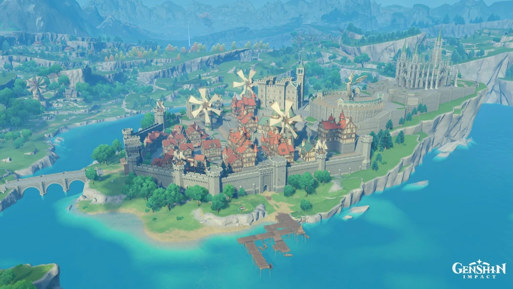

Mondstadt
Mondstadt is one of the seven regions in Teyvat, and the first in which the Traveler starts to look for their lost sibling. It is the city-state that worships Barbatos, the Anemo Archon.
Mondstadt OST
Mondstadt
It was once the capital of Old Mondstadt, ruled by the God of Storms, Decarabian. After he was slain in an uprising, Barbatos took his place and reshaped the land. The people then moved the capital to an island in the middle of Cider Lake, where the City of Mondstadt remains to this day.
Stormterror's Lair OST
Mondstadt
The Skyfrost Nail is located at Dragonspine's summit. Access to this area is unlocked during the World Quest In the Mountains. Attempting to access this area beforehand by scaling the mountain will cause a unique Out of Bounds reaction before the player is teleported away.
Skyfrost Nail OST
Mondstadt
It is the location where Vennessa is said to have ascended to Celestia, where she became a god and now watches over Mondstadt as the Falcon of the West of the Four Winds. The massive oak tree is believed to have grown there after she ascended.
Windrise OST
Mondstadt
Its never-freezing waters are used to create drinks such as apple cider.
Mondstadt
Springvale features dirt-paved areas and one-story tan houses with blue-tiled roofs. One singular windmill watches over it, with a naturally-occurring spring right below it.